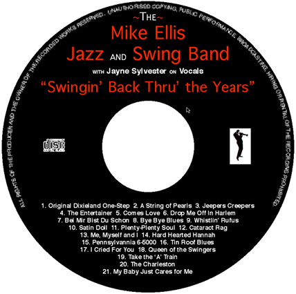

Our recent CD
"Swingin' Back Thru' the Years"
21 tracks with total playing time 70 minutes.

The Music
- Original Dixieland One-Step: A bright opener and the first of
nine arrangements on this CD penned for the band by Humph's trombonist
Pete Strange.
- A String of Pearls: One of two Glenn Miller numbers on this album.
The sound of a bigger band is created by using muted brass for a full
sax section. For seven musicians a pretty full sound is achieved.
- Jeepers Creepers: It's a great opener for our vocalist Jayne, with
a flugel-horn lead section in the first of six arrangements on this
recording by the band's own trombonist Simon Wyld.
- The Entertainer: Almost our earliest offering, it dates from 1922,
and was popularised in the film 'The Sting' in the 70's.
- Comes Love: A lovely minor feel in this beautiful song written in
1939. After the vocal, we've squeezed in a chorus for everyone in the
band, before the final chorus.
- Drop Me Off In Harlem: A real 'Cotton Club' style Ellington number.
We play this with a slightly up-tempo feel.
- Bei Mir Bist Du Schon: The Andrews Sisters had a massive hit with
this from the Yiddish musical 'I Would If I Could' in 1933. This is very
much our own version and features soprano sax, followed by a muted trumpet
and trombone duet and finally banjo. This is one of our instant dancing
numbers which always gets people on the floor at functions.
- Bye Bye Blues: Originally dates from 1912 and was re-written in 1930.
Popularised in the 60's by the Bert Kaempfert Orchestra, and our version
is loosley based around that recording.
- Whistlin' Rufus: This is a transcription of the Chris Barber version
of a good old tune written in 1899.
- Satin Doll: This number from 1953 was Ellington's first release on
the Capitol label and it's become a classic. Lyrics added by Johnny Mercer
and Billy Strayhorn in 1958 have made it something of a pop standard too.
- Plenty-Plenty Soul: A QuincyJones/Milt Jackson number from 1957. The
band gives this arrangement the New York treatment and is a great contrasting
sound on this CD.
- Cataract Rag: Some very tight but relaxed precision playing from the front
line in this 'classical style rag'.
- Me, Myself and I: From the Billie Holiday book, this is a great arrangement
for our seven piece and the vocal does it justice !
- Hard Hearted Hannah: Our version of the 'Temperance Seven' hit, and the
words really do tell a story.
- Pennsylvannia 6-5000: A swing era classic. Always a popular request where
ever we go and once again we re-create the big band sound.
- Tin Roof Blues: A loose busker, we play this in a relaxed Chicago style.
- I Cried For You: Another Billie Holiday classic written in 1923. Diana Ross
featured this number in 'Lady Sings The Blues', the biopic of Billie Holiday.
- Queen of the Swingers: This song was featured in it's original version by
Louis Prima in the sound track of 'The Jungle Book', and of course was a hit for
Kenny Ball. Here's a different interpretation and it's a fun number.
- Take the 'A' Train: Adopted as the Ellington theme tune in 1941. The 'A' train
is the one that goes to Harlem (we really should have positioned this on the CD
immediately before track 6).
- The Charleston: Perhaps the most famous of all dance crazes. Hang onto your hat!
- My Baby Just Cares for Me: Forget the Nina Simone version of this number, this
arrangement is well and truly set in the thirties and really swings along.
CD available direct from the band at gigs for £10. Or, if by post send cheque for £11 (this includes p&p,uk),
made payable to: Mike Ellis, 17 Newlands Ave, Radlett, Herts, WD7 8EH.